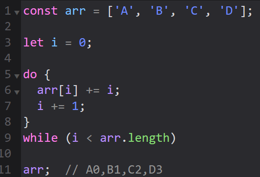

цикл do while
- подготовка выполняется перед циклом:
let i = 0;
- в фигурных скобках происходит изменение данных до первой проверки
- в круглых скобках, после
while происходит проверка
- таким образом в этом цикле действие по изменению данных выполнится хотя-бы один раз

next
back